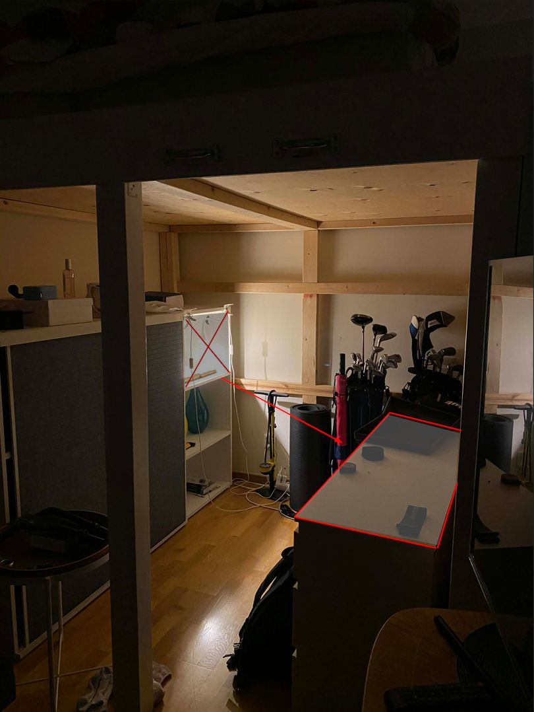

Before beginning the iterations, we gathered the following equipment for the archival process.
Note that some materials were added between iterations — items added after a particular iteration are noted accordingly.
| Cameras | iPhone Pro 11 / Samsung Galaxy S24 Ultra |
| Lighting | Two 1.9W LED lights from the IKEA Nävlige series |
| Gloves | White cotton gloves — always worn when handling the document |
| Background | Exibel mouse mat (neutral gray) — 2nd iteration onwards |
| Tape | Electrical tape & extra strong duct tape |
| Tape measure | Hard Head purple 3m roll measurer |
| Paper | 1 A2 sheet from Panduro, cut in half to reflect even light — 3rd iteration onwards |
| Light stand | Kitchen chair with lamps clipped onto the back |
| Miscellaneous | Stainless steel scissors / water leveller |
| Software | GIMP 2.10 (Windows) for image processing |

Click image to view GIMP metadata.
Fig. — Night-time digitisation workspace, 2026
All pictures were taken at night to limit light pollution from other sources. This meant that once we realised we would be unable to continue a photography session due to missing materials, we had to wait for the sun to set again. As a result, the images were taken between 29/04 and 04/05 2026.
Initial Setup & Testing
- Size of workarea
- Width: 56.5 cm
- Depth: 38 cm
- Height: 40.5 cm

Click image for XML metadata

Click image for XML metadata

Click image for XML metadata
Adjusting the Environment
- Size of workarea
- Width: 90 cm
- Depth: 40 cm
- Height: 102 cm
[Describe the second attempt based on what you learned from the first. E.g., Moving the lights, changing camera settings, or adjusting the artefact's position.]

Click image for XML metadata

Click image for XML metadata

Click image for XML metadata
The Final Setup & Post-processing
- Size of workarea
- Width: 90 cm
- Depth: 40 cm
- Height: 102 cm
[Describe the successful, final setup — final lighting angles, distance from camera to object, and the pre/post-processing adjustments made in GIMP.]
Reflection
[Add your reflections on the entire digitisation process here. For example: what proved to be the most challenging aspect? How did your setup evolve from Iteration 1 to 3? What would you do differently if you had access to a professional archival studio?]